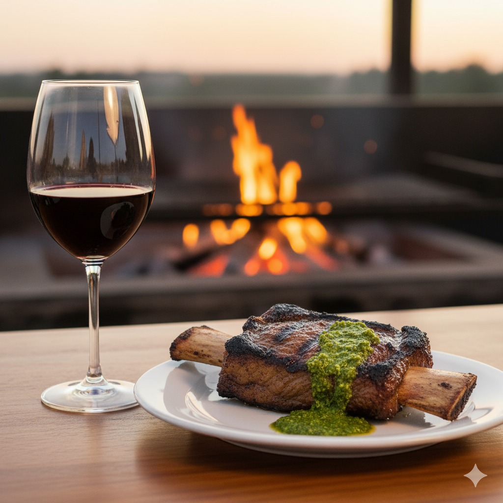

Malbec + Asado
Intensidad: media–alta
Salsas/condimentos: chimichurri, pimienta
Temperatura: 16–18 °C
Extra: si hay mucho ahumado, elegí Malbec más estructurado.
Intensidad: media–alta
Salsas/condimentos: chimichurri, pimienta
Temperatura: 16–18 °C
Extra: si hay mucho ahumado, elegí Malbec más estructurado.

Intensidad: alta
Salsas/condimentos: tomate, laurel, romero
Temperatura: 16–18 °C
Extra: taninos firmes limpian grasas y colágeno.
Intensidad: media
Salsas/condimentos: comino, ají suave
Temperatura: 8–10 °C
Extra: su aroma floral balancea especias suaves.
Intensidad: media
Salsas/condimentos: hierbas, manteca, setas
Temperatura: 14–16 °C
Extra: su acidez y tanino fino respetan sabores delicados.
Intensidad: media
Salsas/condimentos: crema, manteca, queso
Temperatura: 9–12 °C
Extra: si es con roble, suma textura y notas de vainilla.
¿Duda con algún término? Visitá el glosario.